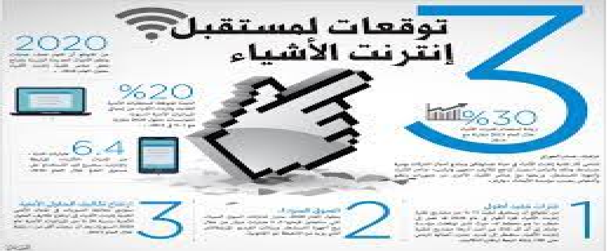

إنترنت الأشياء يعمل بالأساس على البيانات المتاحة له من الأجهزة والأشخاص، لذا فهي تتطلب مجال علم تحليل البيانات، أو إدارة البيانات الضخمة لتحليلها وترتيبها واستنباط منها معلومات ضرورية جديرة بالمشاركة مع المستخدم، لذا كن مستعدًا لدراسة علم تحليل أو جمع البيانات.
يعد التفاعل بين الإنسان والحاسوب واحدًا من أهم المجالات التي يحتاجها إنترنت الأشياء حيث يركز على التفاعل بين الإنسان والحاسوب، بالإضافة إلى المجالات ذات الصلة مثل تجربة المستخدم والعوامل البشرية (بيئة العمل)، أي كيفية عمل الأفراد والتكنولوجيا معًا في مجالها.
كما يشتمل هذا العلم على تعليم الطلاب كيفية تصميم واجهات أفضل، وكيفية استخدام بيانات لعمل اختبارات للمستخدم لإجراء تحسينات على المنتجات.
لعل المشترك في مجال إنترنت الأشياء هو التصميم الجيد، وتجمع برامج شهادات التصميم الصناعي والمنتجات بين الفن والتصميم والتكنولوجيا وعلوم الكمبيوتر، لتعليم الطلاب كيفية إنشاء منتجات لا تعمل فقط بشكل جيد ، ولكن تبدو جذابة.
تعمل منتجات إنترنت الأشياء على تطبيق جوال أو يرتبط على الأقل بتطبيق جوال. لذا يعد تخصص تطوير التطبيقات من المجالات المطلوبة بشدة عند تصميم شبكة إنترنت أشياء قوية. والتي لابد أن تجمع بين الراحة والتشغيل البسيط.
هل سمعت عن التغليف الذكي؟ حسنًا، هذا مثال على تقنية إنترنت الأشياء أيضًا. تعد التعبئة والتغليف واحدة من أكبر الصناعات في العالم، وتصميم الأغلفة هو واحدًا من المسارات الوظيفية في مجال إنترنت الأشياء والتي يغفل عنها الكثيرون.
وهو الشخص المسئول عن تنسيق عمل الروبوتات أي الأجهزة في نظام شبكة إنترنت الأشياء، ومتابعة سير المعلومات والبيانات واستكشاف الأعطال والأخطاء، علاوة على الصيانة الدورية لشبكة إنترنت الأشياء.
وهو الذي يقوم ببرمجة الروباتات والأجهزة الذكية الموصولة بإنترنت الأشياء بفاعلية، أي إنه يصنع الدائرة التي تشبة الدائرة الكهربائية، لجعل جميع الأجهزة متصلة بشكل جيد بالشبكة.
تعد المرحلة الأخيرة لإنترنت الأشياء هو إعداد شاشة ذكية تمكّن المستخدم من التحكم في البيانات، سواء للتحكم في المستشعرات أو البيانات، لذا يعد دور مصمم نظام تجربة المستخدم فعّال في المستقبل.
قبل البدء في توصيل الأجهزة لابد من رسم على الأتوكاد لمسار الاستشعار وكيفية اتصال الأجهزة شبكة إنترنت الأشياء، لذا سيكون مجال مصمم أوتوكاد محوريّ في هذه المجال.
وهو المسئول عن تحديد المواد المناسبة في بناء أجهزة منظومة إنترنت الأشياء، والمواد التي قد لا تعمل في إطار شبكة إنترنت الأشياء.
وهو الذي يعمل على تأسيس شبكة حوسبة قابلة لاستقبال الاستشعارات والبيانات بدقة وبصورة صحيحة تمكنها من عملية التحليل المنضبط.
والذي يتمحور دوره في التحقق من سلامة جميع أجزاء المنظومة وإجراء الاختبارات لاستكشاف السيناريوهات المحتملة من جميع البيانات المتلقاة.
